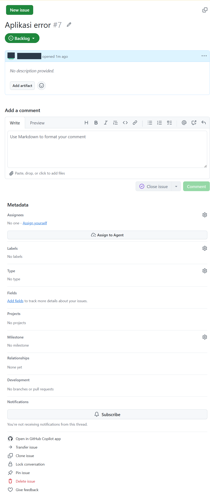
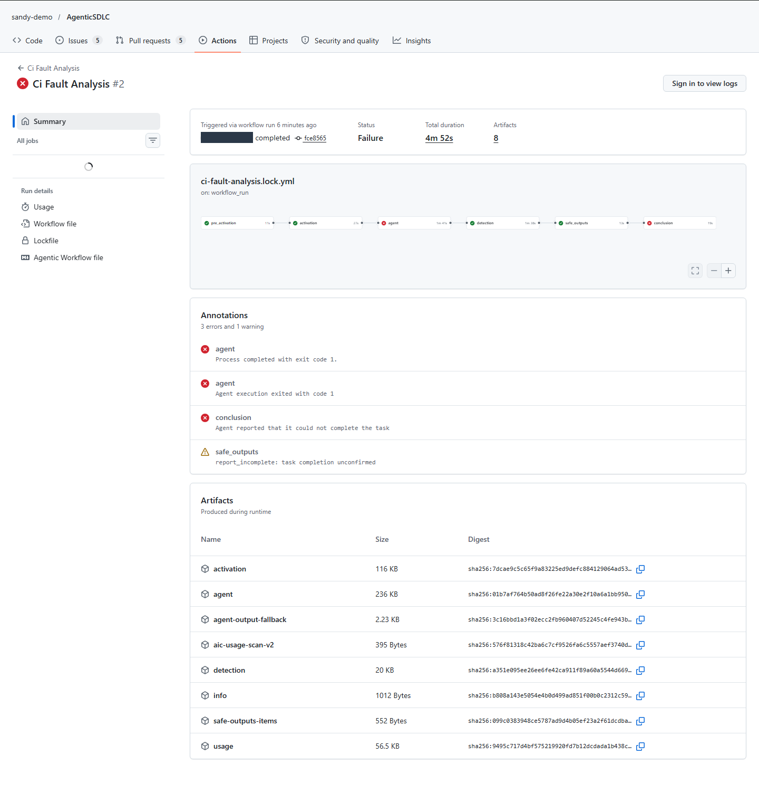

S13 · Level 4 — Continuous AI
Triage issue dan diagnosis CI
Triage memberi label atau pertanyaan; workflow kedua membaca log fixture dan menulis maksimal satu komentar ke PR pemicu.
Status latihan: Pemicu live teruji · Copilot CLI HTTP 403; label dan komentar belum terbit. Ikuti langkah · Ulangi dari awal.
Masalah yang dihadapi
Issue tanpa detail menunda triage; error serupa dianalisis berulang.
Kerugian: Waktu senior habis untuk administrasi dan membaca log.
Masalah pada baseline
.github/workflows/ci-fault-analysis.md
Lihat potongan atau catatan sumber
workflow_run dibatasi ke CI pada demo/ci-econnreset; checkout dinonaktifkan.Solusi dan alur
Triage memberi label atau pertanyaan; workflow kedua membaca log fixture dan menulis maksimal satu komentar ke PR pemicu.

- Push demo/manual → Docs Sync → draft PR docs.
- Issue latihan dibuka → Issue Triage → label atau komentar.
- CI latihan gagal → CI Fault Analysis → satu komentar pada PR pemicu.
Lihat sumber Mermaid

flowchart TB
push["Push demo / manual"] -->|Bandingkan kontrak| docs["Docs Sync"]
issue["Issue latihan dibuka"] -->|Nilai kelengkapan| triage["Issue Triage"]
ci["CI latihan gagal"] -->|Baca log| fault["CI Fault Analysis"]
docs -->|Izinkan draft PR docs| pr["Satu PR"]
triage -->|Izinkan label dan jawaban| label["Issue pemicu"]
fault -->|Izinkan satu komentar| comment["PR pemicu"]
classDef ai fill:#efe6ff,stroke:#7354a4,color:#382459
class docs,triage,fault aiLangkah demo
Lihat run publik yang gagal
Actions → CI pada demo/ci-econnreset. Pilih test (America/Los_Angeles) → Latihan S13 — koneksi putus. Job Jakarta tetap hijau. Jalankan fixture lokal untuk melihat ECONNRESET bila log web tidak terbuka.
node --test tests/labs/ci-connection.mjs Perbesar S13-ci-failure.png
Perbesar S13-ci-failure.pngLayar ringkasan GitHub Actions publik · bukan hasil revisi agent · Actions publik: ringkasan run CI berstatus Failure dan job LA merah. Triage issue tanpa detail
Pada repo latihan dengan workflow aktif, pilih Issues → New issue. Isi judul persis Aplikasi error, kosongkan body. Periksa sidebar Labels untuk needs-info dan satu pertanyaan klarifikasi, bukan respons yang ditebak.
Aplikasi error
Perbesar S13-before.pngSumber GitHub · Buka Issues → New issue. Ini keadaan awal: hanya judul Aplikasi error dan No description provided. Cek diagnosis di PR pemicu
Buka draft PR cabang demo/ci-econnreset bila cloud siap. Workflow ci-fault-analysis hanya untuk kegagalan event pull_request; run push yang ditampilkan tidak membuktikan komentar agent.
gh run view 45567770139 --job 139046667307 --log-failed -R sandy-demo/AgenticSDLC Perbesar S13-local-result.png
Perbesar S13-local-result.pngOutput lokal yang dirender · bukan layar portal · Output pemeriksaan lokal S13: Diagnosa ECONNRESET fixture; Pemicu triage yang bisa diperiksa.

Sebelum dan sesudah
S13-after.png| Bagian | Sebelum | Sesudah / target |
|---|---|---|
| Perilaku | Fixture cabang latihan memberi ECONNRESET tanpa membuka koneksi. | Target: label needs-info dan satu komentar pada PR pemicu. Keduanya tidak terbit karena panggilan Copilot CLI ditolak. |
| Bukti visual | Ada tangkapan GitHub. | Belum direkam. |
| Keputusan | Peserta membaca keadaan awal. | Manusia memeriksa hasil sebelum meneruskan. |
Manfaat
- Maintainer bisa langsung mengambil issue yang siap.
Bukti dan sumber
Template issue S13 · Data latihan dan pengukuran.
Bukti GitHub live
Kegagalan ECONNRESET berasal dari fixture LA. Kedua job Copilot CLI ditolak HTTP 403, tanpa label atau komentar baru. Pemicu sementara sudah dihapus.
- issues/7
- pull/8
- actions/runs/45596624154
- actions/runs/45596615909
- actions/runs/45596785536
- actions/runs/45567770139
 Perbesar S13-triage-auth-error.png
Perbesar S13-triage-auth-error.png

Perbesar S13-ci-analysis-auth-error.png2 layar yang belum direkam
S13-01-triage.pngS13-after.png
Ulangi latihan
Pemeriksaan tidak menulis kode atau data remote. Ulangi perintah di terminal baru bila sebelumnya mengubah variabel lingkungan.
npm run reset -- --fresh